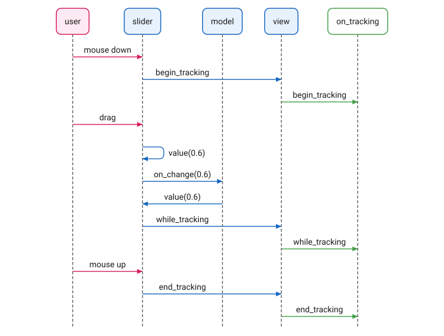
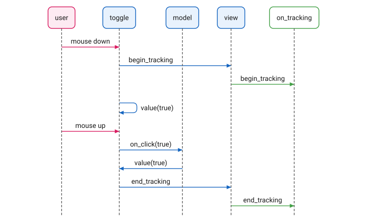
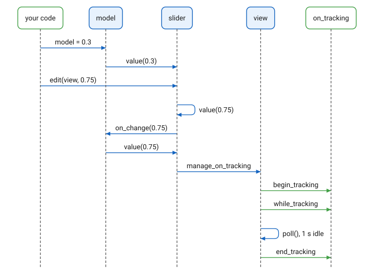
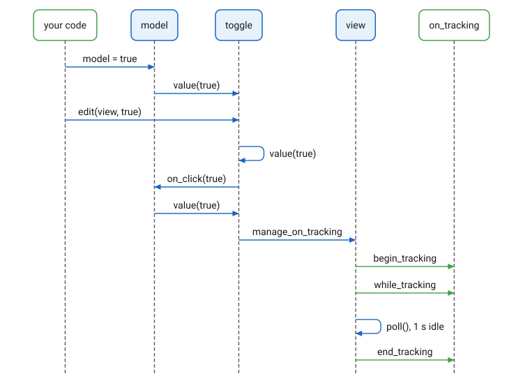

Receivers
Overview
A receiver is an element that holds a value: a slider holds a double, a
button holds a bool, a text box holds a string. receiver<T> is the
interface such an element implements. It has three operations:
| Operation | Purpose |
|---|---|
|
Read the value. |
|
Set the value, without notification. Used by code that owns the value: a model update, or initialization. |
|
Set the value as a user edit, with notification. Used by code that acts on the user’s behalf: a keyboard shortcut, a reset button, a preset recall. |
Notification
A user edit is reported through two independent callbacks, with different purposes:
| Callback | Member of | Purpose |
|---|---|---|
|
The element. For buttons, |
Receives the new value. Typically bound to a model through
|
|
The |
Receives the element and a tracking state: |
on_change is called for every user edit, whatever its source: a mouse
drag, a scroll wheel step, or edit(view, v) from code. It is never
called by value(v). The following sections give the exact order of the
calls for each source.
GUI Interactions
The order of the calls depends on the kind of control. The slider and the button are the two patterns; the other controls follow one or the other.
Sliders
The user drags a slider. The slider calls both callbacks in this order:

-
Mouse down:
on_trackingwithbegin_tracking. -
Each drag step: the slider sets its own value, then calls
on_changewith it, thenon_trackingwithwhile_tracking. -
Mouse up:
on_trackingwithend_tracking.
The gesture is bounded by the mouse press and release.
The model’s value(0.6) after on_change(0.6) looks redundant,
and for this binding it is: the slider set its own value before
reporting it, so the call changes nothing. It is there because the model
does not know where its update came from. The update goes to every
control bound to the model, so a second slider bound to the same model
follows the first, and a binding with a mapping shows the control what
the model took, which may differ from what the control reported: a
mapping that snaps to steps, for instance.
|
A scroll wheel step has no press or release. It calls on_tracking with
while_tracking, then on_change with the new value. The view supplies
begin_tracking before the first while_tracking, and ends the gesture
as it does for an edit from code, described next.
Buttons
A button has no intermediate values. The user presses and releases a toggle, and the toggle calls the callbacks in this order:

-
Mouse down:
on_trackingwithbegin_tracking, then the toggle flips its own value. -
Mouse up, inside the button:
on_clickwith the value, thenon_trackingwithend_tracking. The model’svaluecall back is as for the slider.
There is no while_tracking: the button follows the mouse visually while
it is held, but the user has not decided until the release, so no value
is reported before then. A release outside the button cancels the click:
on_tracking with end_tracking, and no on_click. Dials,
thumbwheels and the other dragged controls follow the slider; check
boxes, radio buttons, switches and the other buttons follow the button.
A momentary button is a trigger, not a state: its value is "pressed",
true only while the mouse is down. model_binder refuses to bind one, at
compile time; it binds toggles, latching buttons, check boxes, radio
buttons and switches, whose value is a state.
Programmatic Interactions
Sliders
Code sets the slider’s value through one of its two setters:

value(v)-
Sets the value. Neither callback is called. This is how a model update reaches the element: the control shows the new value, and the model is not notified of what it already has. Automation, for example, writes through the model, and is therefore never recorded as a user edit.
edit(view, v)-
Sets the value as a user edit. Sets the slider’s own value, then calls
on_changewith it, thenon_trackingwithwhile_tracking. If the element is not already being tracked, the view first callson_trackingwithbegin_tracking.
An edit from code has no mouse release to end its gesture. The view ends
it: view::poll calls on_tracking with end_tracking once the element
has gone one second without an edit. Edits within that second belong to
the same gesture.
Buttons
A button’s edit reports the same tracking states:

edit(view, v) on a toggle or latching button sets its own value, then
calls on_click with v. On a momentary button, whose value is only
"pressed", edit calls on_click and leaves the value alone. The
tracking states follow as for the slider: begin_tracking and while_tracking at once, end_tracking
from view::poll one second later.
The Library’s Receivers
| Element | Value Type |
|---|---|
|
|
|
|
|
|
|
|
|
|
|
|
|
|
text boxes |
|
|
|
|
|
Declaration
namespace cycfi::elements
{
template <typename T>
struct receiver : receiver_base
{
using receiver_type = T;
using getter_type = T;
using param_type = T;
virtual void value(param_type val) = 0;
virtual getter_type value() const = 0;
virtual void edit(view& view_, param_type val);
};
template <>
struct receiver<std::string> : receiver_base
{
using receiver_type = std::string;
using getter_type = std::string const&;
using param_type = string_view;
virtual void value(param_type val) = 0;
virtual getter_type value() const = 0;
virtual void edit(view& view_, param_type val);
};
template <typename T>
struct basic_receiver : receiver<T>
{
void value(param_type val) override;
getter_type value() const override;
};
}receiver<T> is abstract: a concrete element implements both value
functions. receiver<std::string> takes a string_view and returns a
reference, so neither direction copies the string.
basic_receiver<T> implements both value functions over a member of
type T, value initialized. It serves an element that holds a value and
draws it, with no further behavior.
Expressions
Semantics
| Expression | Semantics | Return Type |
|---|---|---|
|
The current value. |
|
|
Set the value. No callback is called. |
|
|
Set the value as a user edit: call |
|
Example
A slider bound to a model, with an on_tracking that groups each gesture
into one undo step:
value_model<double> volume = 0.5;
auto vol = share(slider(basic_thumb<20>(), basic_track<5, false>()));
model_binder binder{[&view_](element& e) { view_.refresh(e); }};
binder.bind(volume, vol);
view_.on_tracking =
[](element& e, element::tracking state)
{
if (state == element::begin_tracking)
; // open an undo step
else if (state == element::end_tracking)
; // close it
};
volume = 0.3; // model update: the slider shows 0.3,
// no callback is called
vol->edit(view_, 0.75); // user edit: volume is 0.75, and a gesture
// begins, ending one second laterCopyright (c) 2014-2026 Joel de Guzman. All rights reserved. Distributed under the MIT License